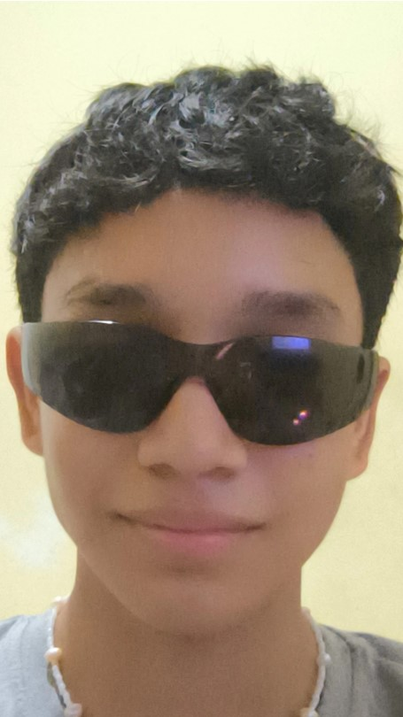

Me llamó Jafeth Edgardo Guevara Mendez, tengo 16 años, nací el 24 de diciembre del 2007 y estoy estudiando en el instituto Fermín Naudeau, estoy en el bachillerato de informática en el salón 11°c.
Por ahora no toco ningún instrumento pero cuando estaba más chico estaba en la banda de mí colegio anterior y tocaba caja,
de deportes no sé si cuenta como deporte pero práctico skateboarding y ya llevo casi un año con eso pero aún soy bastante malo con la patineta,
a veces me gusta dibujar y hacer graffos, también amo escuchar musica, escucho de todo tipo a excepción de las que no me gustan y creo que eso sería todo 🧟.